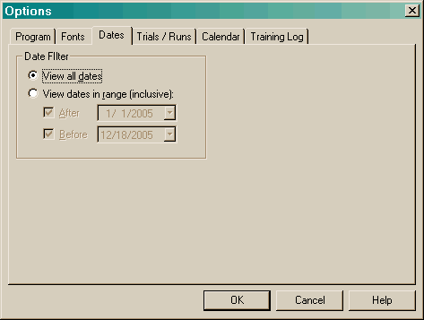

The Date filter allows you to set a filter that will hide entries in the main views.

Changing the Dates radio button will also enable the fields below it. If neither checkbox is checked when you close the dialog, the Dates setting will revert back to viewing all dates.
All View Options are saved into the local Windows Registry.